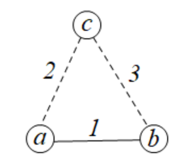

算法导论21 Problems 答案
21-1
a
题目21.1-8给出，对于图\(G\)中的每棵最小生成树\(T\)，其边权有序列表总是唯一的。由于本题中已经认定原图\(G\)的边权互不相同，因此求出一个最小生成树\(T\)后，对应构造出的列表\(L\)是唯一的，因此最小生成树是唯一的。
令图\(G\)的权值邻接矩阵如下：
\(\begin{array}{|l|l|l|l|l|}\hline &a&b&c&d\\\hline a&-&1&3&5\\\hline b&1&-&2&4\\\hline c&3&2&-&-\\\hline d&5&4&-&-\\\hline \end{array}\)
可以发现，边集\(\{(a,b),(b,c),(b,d)\}\)是最小生成树的边集，边权总和为\(7\)，而\(\{(a,b),(b,c),(a,d)\}\)和\(\{(a,b),(a,c),(b,d)\}\)是两棵不同的次小生成树，边权总和为\(8\)。如下图所示：

b
对于\((u,v)\in E_T\)，令从\(T=(V,E_T)\)删除后连通的两部分边集\(V_1,V_2\)。对于切割\((V_1,V_2)\)，由于\((u,v)\)是轻边，那么说明将横跨这个切割的边\((u,v)\)添加到\(E_T-\{(u,v)\}\)是安全的。对于其它边都是不安全的，选择一条不安全的边添加到\(E_{T}-\{(u,v)\}\)中也构成了一个树结构。假设在这些边中，边权最小的是\((a,b)\)，那么\((E_T-\{(a,b)\})\cup\{(a,b)\}\)就是一颗备选的最小生成树（其它边构成的新树都不可能是次小生成树，因为它们比\((a,b)\)边权更大，更不安全）。
c
我们可以使用动态规划的过程以\(O(V)\)的时间复杂度计算\(\max[u,\cdot]\)的所有值。由于树中没有环，并不会产生循环依赖，因此我们可以写出计算\(\max[u,v]\)的状态转移方程：
\(\max[u,v]= \left \{\begin{aligned} &0 & & \text{if}\quad u=v \\ &\max\{\max[u,x],w(x,v)\} & & \text{if}\quad u\neq v \\ \end{aligned}\right.\)
其中节点\(x\)是\(T\)上从\(u\)到\(v\)这条路径上的倒数第二个节点。也就是说，\(\max[u,v]\)要么是从\(u\)到\(x\)这条路径上的边权最大值，要么是\((x,v)\)的边权。因此，通过对这棵树进行BFS，最终能够以\(O(V)\)的算法计算出所有\(\max[u,\cdot]\)的值，这个算法由程序BFS-DIS给出。
最终，枚举所有起点\(s\)，我们可以以\(O(V^2)\)的时间计算出所有\(\max[\cdot,\cdot]\)的值，其通过程序CAL-DIS给出。
1 | BFS-DIS(T, s, w) |
d
通过题目21-1-c给出的CAL-DIS算法，我们可以给出求次小生成树的算法。其思想是，枚举所有不属于最小生成树\(T=(C,E_T)\)的边\((u,v)\)，并尝试将其添加到\(T\)中，那么树\(T\)和边\((u,v)\)就形成了一个环\(C\)，因此需要在\(C\)中删除一条除\((u,v)\)以外的边权最大的边，以使得增加的边权值最小（虽然是严格增加了）。整个算法由程序2ND-MST给出，其关键瓶颈在于计算\(\max[\cdot,\cdot]\)，整个算法的时间复杂度为\(O(V^2)\)。
1 | 2ND-MST(G, w) |
接下来给出一种基于LCA（最近公共祖先）倍增的做法。首先需要以\(O(V\lg V)\)的时间对\(T\)预处理出两个表（这里需要对\(T\)指定一个根）：\(fa[u,i]\)表示\(u\)的第\(2^i\)个祖先，\(m[u,i]\)表示\(\max[u,fa[u,2^i]]\)的值。
那么接下来对于所有边\((u,v)\in E-E_T\)，以\(O(\log V)\)的时间在表\(fa\)上计算它们的LCA：\(l\)，并且计算出\(\max[u,l]\)和\(\max[v,l]\)的值，最终以\(O(\lg V)\)的时间计算出\(\max[u,v]\)的值。因此这个算法可以以\(O(E\lg V)\)的时间复杂度求出次小生成树。
21-2
a
也就是说，证明由算法MST-REDUCE和MST-PRIM联合所生成的边集是最小生成树的边。
对于算法MST-REDUCE生成的边集\(T\)，假设当前第4行代码正在访问的节点是\(u\)，那么考虑切割\((\{u\},V-\{u\})\)，第6行所选定的边是横跨切割\((\{u\},V-\{u\})\)并且是一条轻量级边，因此是安全的。此外将这两个节点通过这条边收缩起来，以后它们统一视为一个节点。
算法MST-PRIM接受输入的是来自MST-REDUCE的输出图\(G'\)。由于所有树边已经被收缩成一个节点，因此仍未收缩的边将会连通任意一个不同代表节点。对这些剩余边进行最小生成树算法将会得到剩下的安全边。因此$
T {(x, y).orig′ : (x, y) ∈ A}\(是\)G$的一棵最小生成树。
b
首先可以发现\(|G'.V|+|T|=|V|\)。因为\(T\)中每产生一条边，\(G\)中就会有\(2\)个节点被合并成一个，也就是说，节点数降低了\(1\)。
当第5行代码if条件成功进入时，第10行代码有可能会另一个端点\(v\)从未标记变成已标记，这意味着以后并不能再产生一条边加入\(T\)中。因此有\(|T|\ge |V|-|T|\)，也就是说，有\(|T|\ge |V|/2\)。因此得到\(|G'.V|\le |V|/2\)。
c
使用一个长度为\(|V|\)的数组\(A\)可以代替并查集操作。花费时间\(O(V)\)对数组\(A\)初始化成A[u] = u，对于所有\(V\)中的节点\(u\)。FIND-SET(u)可以使用A[u]替代，UNION(u, v)可以用A[v] = A[u]替代（注意不可以反过来）。这种做法成立的原因是，可以直接访问当前连通块中的代表元素。最终，算法MST-REDUCE可以\(O(E)\)的时间完成。
d
每一次调用则意味着对这个图进行一次\(O(E)\)的操作，虽然节点数至少减少了一半，但是边数减少的数量也仅仅至少是节点数的减少量。因此\(k\)次调用意味着\(O(kE)\)的时间复杂度。
e
进行\(k\)次调用后，那么整个图的节点数最多为\(\dfrac{|V|}{2^k}\)。因此我们需要选择\(k\)来使得\(|E|+\dfrac{|V|}{2^k}\lg\dfrac{|V|}{2^k}+kE=O(|E| \lg\lg |V|)\)。题目给定的因子\(\lg\lg B\)提示我们考虑验证取值\(k=\lg\lg |V|\)是成立的。那么有
\(\begin{aligned} |E|+\dfrac{|V|}{2^k}\lg\dfrac{|V|}{2^k}+kE&=|E|+\dfrac{|V|}{\lg |V|}\lg\dfrac{|V|}{\lg |V|}+|E|\lg\lg |V|\\ &=\dfrac{|V|}{\lg |V|}\lg\dfrac{|V|}{\lg |V|}+O(|E|\lg\lg |V|)\\ &=\dfrac{|V|}{\lg |V|}(\lg |V|-\lg\lg |V|)+O(|E|\lg\lg |V|)\\ &=|V|-\dfrac{|V|\lg\lg |V|}{\lg |V|}+O(|E|\lg\lg |V|)\\ &=|V|+O(|E|\lg\lg |V|)\\ &=O(|E|\lg\lg |V|) \end{aligned}\)
f
如果这种带预处理的操作优于没有带预处理的操作，那么有\(|E|\lg\lg |V|<|E|+|V|\lg |V|\)，也就是得到\(|E|<\dfrac{|V|\lg |V|}{\lg\lg |V|-1}\)。因此最终有\(|E|=O\left(\dfrac{|V|\lg |V|}{\lg\lg |V|}\right)\)。
21-3
A
算法MAYBE-MST-A返回的是一个最小生成树。当我们按边权从大到小访问这些边\((u,v)\)时，考虑两种情况：
- \((u,v)\)没有被删去。这说明如果\((u,v)\)被删去了，这个图就不连通了，为保证\(T\)中的边连通，\((u,v)\)必须留下。
- \((u,v)\)成功被删去了。令\((V_1,V_2)\)是被边\((u,v)\)横跨的一个切割。由于删去\((u,v)\)后，\(T\)仍然连通，因此在这个时候，仍然有从\(u\)到\(v\)的一条路径，也就是说存在其它边\((a,b)\)仍然横跨\((V_1,V_2)\)。这条边仍然是未被迭代的，因此\((a,b)\)在切割\((V_1,V_2)\)中至少比\((u,v)\)安全。因此可以删去这条边。
算法MAYBE-MST-A的实现依赖于判断图\(T\)的连通性，第4行的伪代码直接进行判断。逆序遍历每一条边然后删除边后判断\(T\)的连通性，这一次判断过程需要\(O(V+E)\)的运行时间。因此整个算法需要\(O(E^2)\)的运行时间。
B
算法MAYBE-MST-B返回的不是一个最小生成树。令\(G=(V,E),V=\{a,b,c\},E=\{(a,b),(b,c),(a,c)\},w(a,b)=1,w(a,c)=2,w(b,c)=3\)。如下图所示：

如果边\((b,c)\)先被访问，那么它们就被添加到了树边集合\(T\)中，构成的\(T\)永远不会是最小生成树。因此算法MAYBE-MST-B是错误的。
算法MAYBE-MST-B的实现依赖于并查集，只需要和Kruskal算法一样，边判断两个端点是否属于同一集合边合并即可。程序MAYBE-MST-B的具体实现由程序MAYBE-MST-B'给出，其时间复杂度为\(O(E)\)。
1 | MAYBE-MST-B'(G, w) |
C
算法MAYBE-MST-C返回的是一个最小生成树。当我们按任意顺序访问并添加这些边\((u,v)\)到\(T\)后，考虑两种情况：
- \(T\)中没有环，这说明\((u,v)\)是所必须要的边。
- \(T\)中产生了环\(C\)，令\((a,b)\)是\(c\)中最大边权的那条边。令\((V_1,V_2)\)是被边\((a,b)\)横跨的一个切割，那么可以知道，环\(C\)上有另外一条边\((x,y)\)横跨切割\((V_1,V_2)\)。由于\((a,b)\)的边权是最大的，因此有\(w(x,y)\le w(a,b)\)。也就是说，\((x,y)\)在这个切割中肯定比\((a,b)\)安全，因此可以删去\((a,b)\)这条边。
算法MAYBE-MST-C的实现依赖于求出\(C\)中从\(u\)到\(v\)的这条路径。程序MAYBE-MST-C的具体实现由程序MAYBE-MST-C'给出，每次进行求解路径的时间复杂度为\(O(V)\)。因此整个算法需要\(O(VE)\)的运行时间。
1 | MAYBE-MST-C'(G, w) |
21-4
a
令\(T\)是\(G\)中的最小生成树，\(T'\)是\(G\)中的一棵瓶颈生成树。假设\(T\)不是瓶颈生成树，也就是\(T\)中存在一条边\((u,v)\)，使得\(w(u,v)>m\)，其中\(m\)是瓶颈生成树的最大边权值。那么令\(T_1,T_2\)是从\(T\)删去\((u,v)\)后形成的两棵树，\(V_1,V_2\)分别表示这两棵树的节点集合。考虑切割\((V_1,V_2)\)，由于\(T'\)是连通的，因此必定存在一条边\((a,b)\)横跨\((V_1,V_2)\)。由于\(w(a,b)\le m<w(u,v)\)，因此边\((a,b)\)比边\((u,v)\)更安全，也就是说，从\(T\)删去\((u,v)\)并加上\((a,b)\)后，将会得到一棵更优的最小生成树，这是矛盾的。因此最小生成树是瓶颈生成树。
b
只要一个图\(G\)是连通的，那么我们总能找到一棵生成树。因此该问题的本质上是判断图\(G\)中小于等于\(b\)的所有边是否构成\(G\)中的一个连通图。我们通过改造BFS算法即可以以\(O(V+E)\)的时间复杂度判断\(b\)值是否可行。这个算法由程序CHECK-NECKBOTTLE-BOUND给出。
1 | CHECK-NECKBOTTLE-BOUND(G, w, b) |
c
我们将使用子程序BST-REDUCE对所有满足\(w(u,v)\le
b\)的边进行收缩，整个过程的时间复杂度为\(O(E)\)，因为它遍历了两次所有边，第一次遍历是将所有满足\(w(u,v)\le
b\)中的边收缩成点，第二次遍历则是将满足\(w(u,v)> b\)映射到新图中的点。
主程序由GEN-NECKBOTTLE-TREE给出，它使用了第9章的算法来求中位数，并划分所有边。可以发现，第6行的while循环迭代一轮后，图\(G\)中的边数至少减少一半。而while循环后面的补边操作全过程也是\(O(E)\)，因此这个算法的时间复杂度为\(O(E)\)。
1 | BST-REDUCE(G, T, b) |